Recetas de Semana Santa en Bolivia
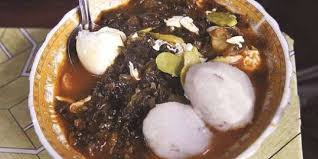
Aji de cochayuyo
El ají de cochayuyo es un platillo tradicional latinoamericano preparado con el alga cochayuyo, papas, arvejas, huevos y queso fresco. Su sabor único y nutritivo lo convierte en una opción ideal para Semana Santa y otras celebraciones. ¿Has probado esta exquisita combinación de sabores?.
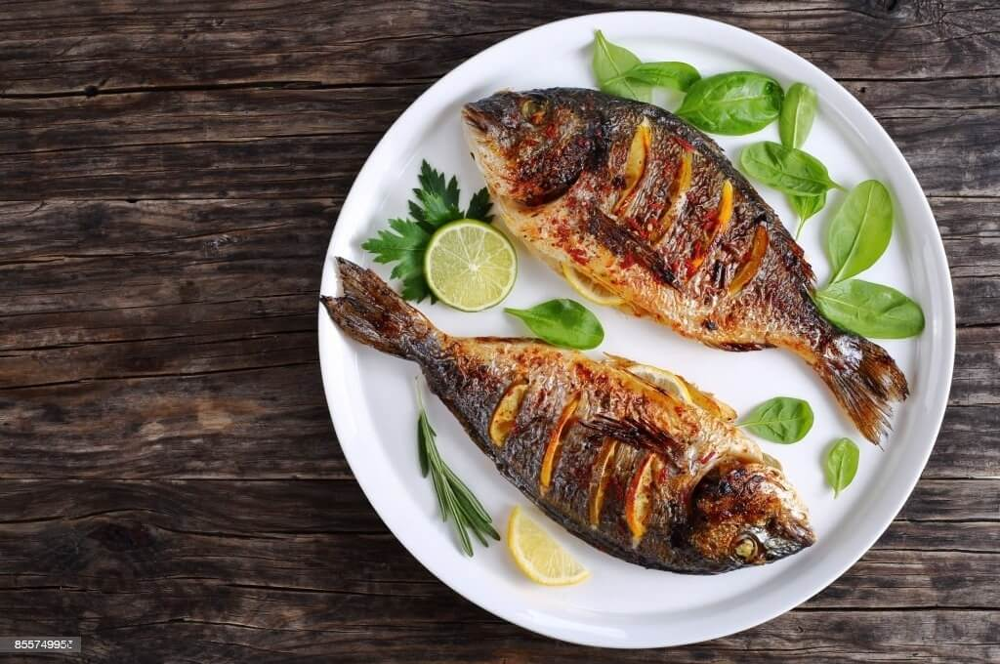
pescado
El pescado es un platillo tradicional en Bolivia durante la celebración de Todos Santos. Entre los pescados más consumidos en esta época se encuentran el surubí, el pacú, el tucunaré y la piraña. .

aji de arbeja
Freír el tomate, cebolla, locoto y zanahoria todos muy bien picados, los condimentos junto con el ají y luego cubrir con agua y dejar cocer una hora aproximadamente, posteriormente la arveja seca, previamente cocida, papa y dejar en el fuego hasta que todo esté cocido.
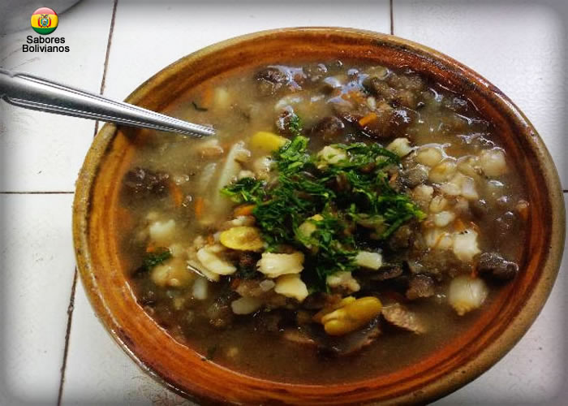
Chairo
El chairo es una tradición boliviana principalmente de la ciudad de La Paz y también forma parte de una tradición peruana de Puno, conocido plato de origen Aimara..
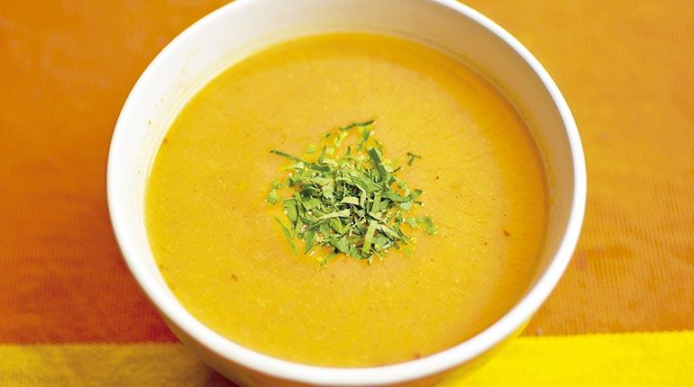
lagua de choclo
La lagua es una sopa espesa de la región de Valle de Bolivia, originaria de Cochabamba. Es parte de las 12 recetas de los Apóstoles de Semana Santa.

Api con Buñuelos
Bebida caliente de maíz morado acompañada de buñuelos Sobre todo cuando hace mucho frío. La mezcla del rojizo Api Morado con el claro Api Blanco es muy popular..
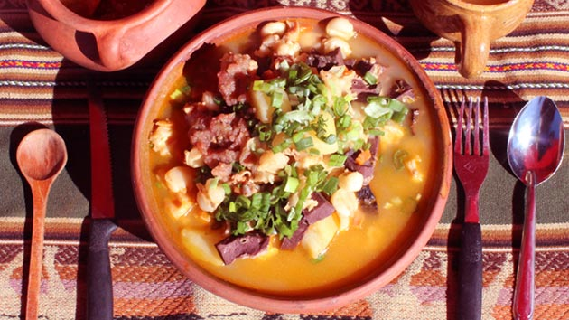
Calapurca
La calapurca es una sopa tradicional boliviana que se consume en festividades y es muy popular en la región de Potosí. Se prepara con carne de llama, harina de maíz, y se calienta con piedras volcánicas precalentadas. .
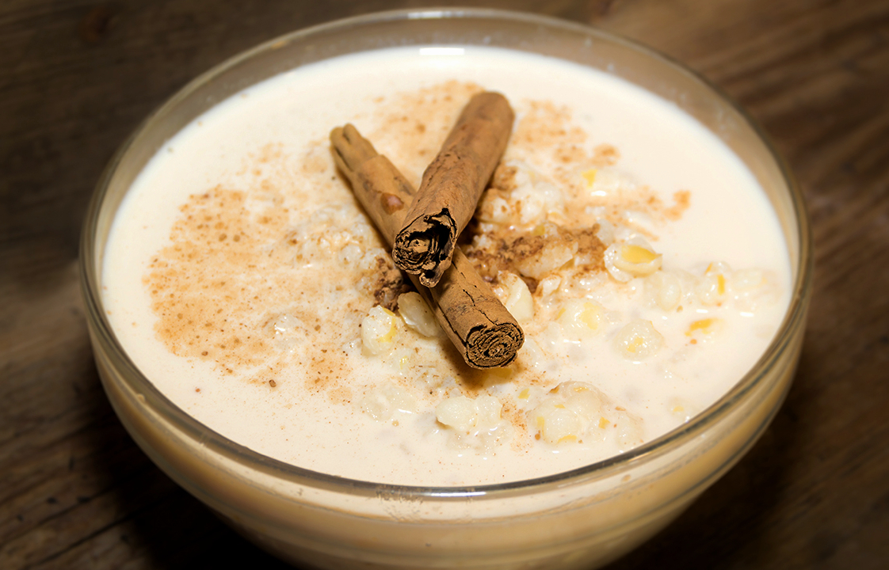
Mazamorra de quinua
La mazamorra de quinua es un postre tradicional en Perú, que combina sabores únicos y beneficios nutricionales. Con raíces en las culturas precolombinas, este plato resalta la importancia de la quinua en la alimentación andina.
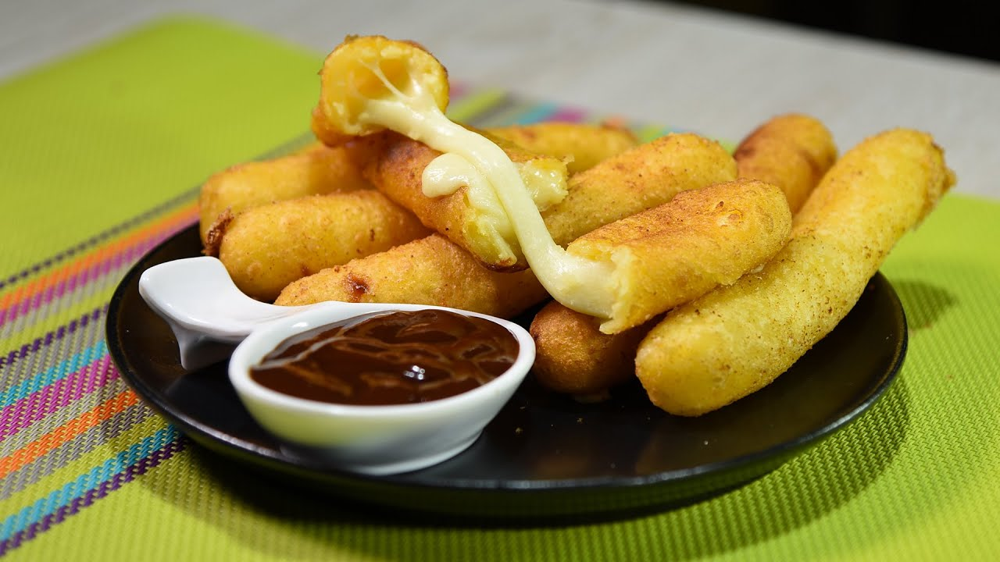
Yuca con queso
La mandioca, yuca, guacamota (del náhuatl cuauhcamohtli), casava o casabe (Manihot esculenta, sin. M. utilissima) es un arbusto perenne euforbiácea, autóctona y extensamente cultivada en Sudamérica y el Pacífico por su raíz almidonosa de alto valor alimentario..
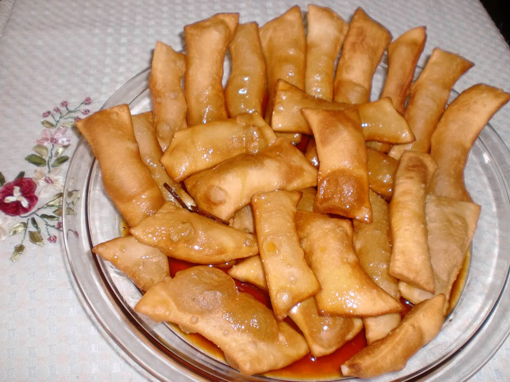
Tawa Tawa
La Tawa Tawa viene de la etimología quechua "tahua" que significa "cuatro" cuando estos manjares potosinos eran preparados en época colonial por las vendedoras, muchas de ellas eran de habla quechua .
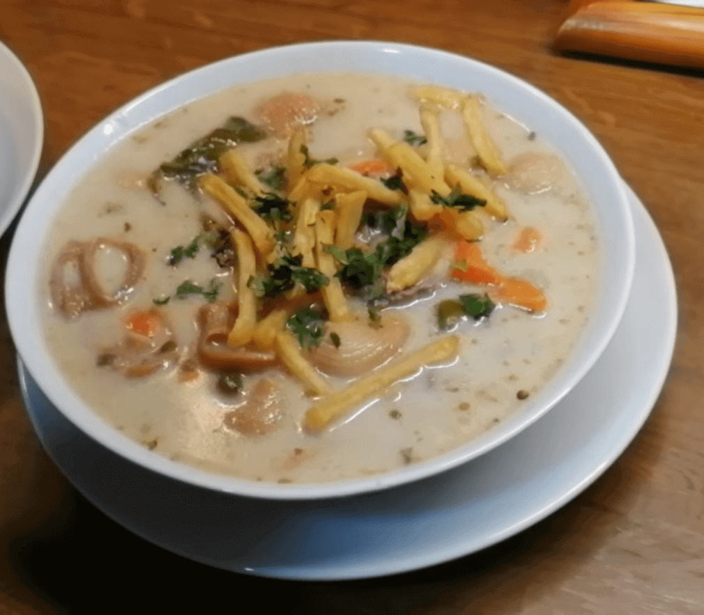
Sopa de Mani
Sopa de maní, un caldo hecho con maní crudo licuado, verduras y tu proteína favorita. Se sirve con un poco de papas fritas caseras y se acompaña con rodajas de pan francés..
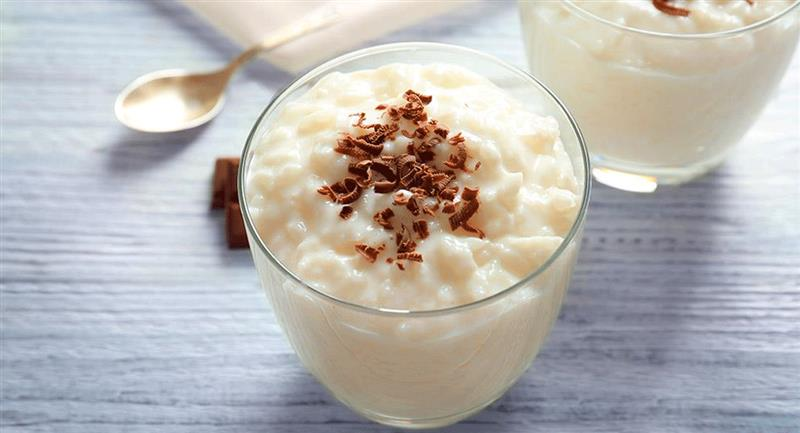
Arroz con leche
Cocer arroz con leche entera, evaporada o condensada, mezclada con agua. Incorporar canela, clavo de olor y azúcar al gusto. Servir caliente o frío. Además de los platos, las frutas de temporada también son parte del menú. Entre ellas los duraznos, uvas, membrillos, peras y otras. Algunos tienen la costumbre de ayunar en Viernes Santo.
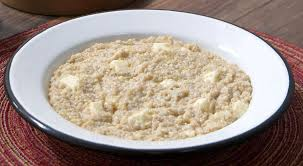
pesque de quinua
Cocer la quinua hasta que empiece a reventar, hacerla puré. Añadir sal, leche y aceite. Servir con queso rallado percfecto para el paladar un platilllo rico y nutritivo para la semana santa que ademas al tener quinua puede ser un platillo unico en vitaminas y mineras que nos ayuda a nuestrs cuerpos.
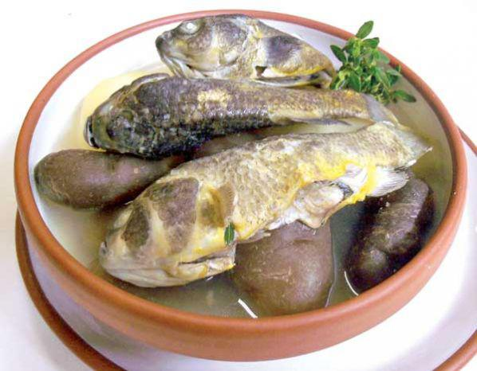
Wallake
mauri o karachi: En una olla hervir por media hora el pescado y en otra la papa y chuño. En otra cacerola freír cebolla, tomate, ají amarillo y añadir al caldo del pescado junto con las hojas de q´oa picadas. Colocar las papas cortadas en rodajas y el chuño, después el pescado, previamente lavado y destripado, hasta su cocción. Trucha: Enharinar y condimentar los filetes de trucha y freír en aceite o gusto.
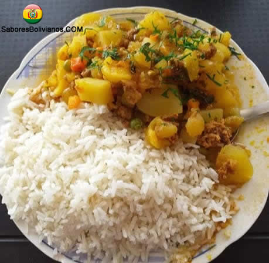
Aji de papaliza
El Ají de Papalisa es uno de los platos de almuerzo más populares de Bolivia y en realidad no es tan complicado de preparar pero muy delicioso para el paladar sin duda valdra la pena la espera ya que es un platillo delicioso

papa a la huancaina
papas a la huancaina patillo sin carne roja perfecta para almorzar en semana santa ya que recordemos que no podemos comer carne roja en semana santa es un platillo muy comun en Bolivia ya que su facil prparacion puede ser el indicado en poco tiempo de preparaciond